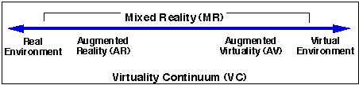
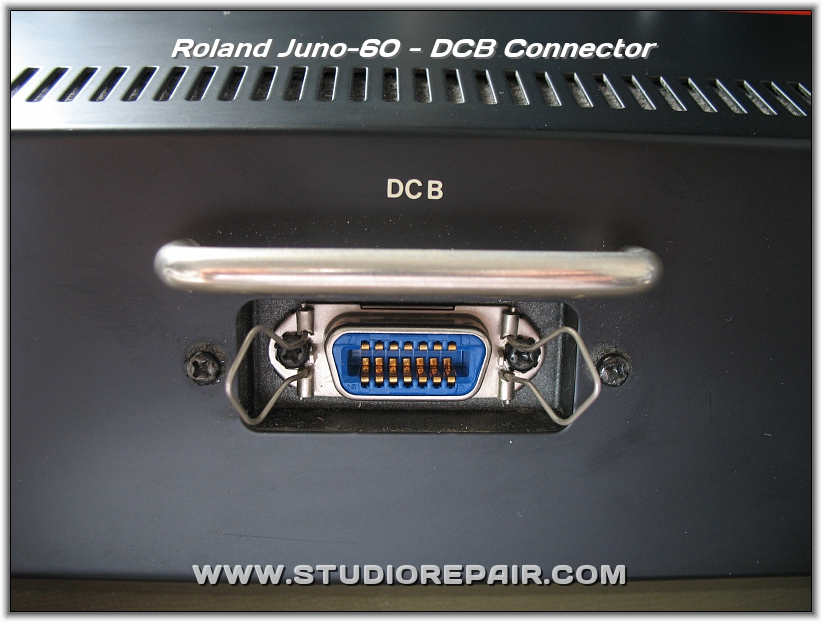
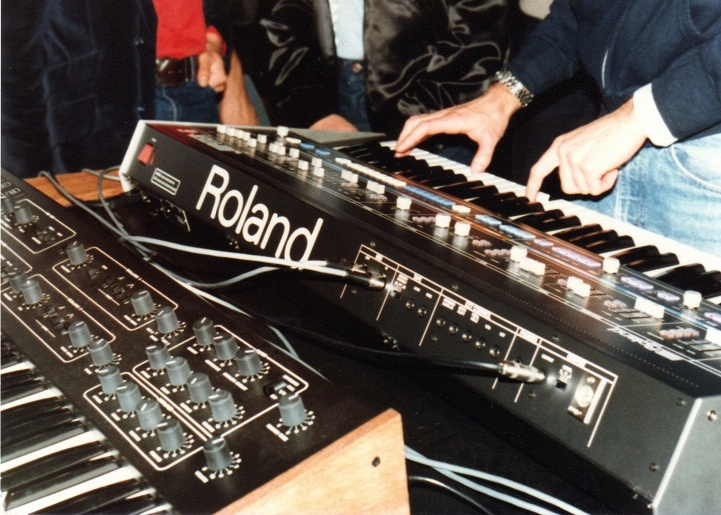

mixed reality
konnen wir bitte anfangen?
unity - vr/mr
audio recordings
audio processing
midi controls
plan for today
1. review some of your homework
2. what is mixed reality?
3. how do i develop for mixed reality?
4. midi and unity
homework
building stories in 360
extend the senses
??? > mixed reality
you can switch between physical reality and virtual reality
augmented reality : the scope of spatial awareness
mixed reality
mixed reality blends the physical and digital

based on hardware perception: head tracking / spatial mapping / spatial understanding / ...
the hardware is at the intersection between holograhic (AR) and immersive (VR)
applications: multilple virtual desktops, placing virtual furniture, showing boundaries of physical world in VR.
hololens
microsoft immersive reality headsets (hp, lenovo, asus)
mixed reality - desktop
hardware: either hololens or Microsoft Immersive Devices
software: develop using the Universal Windows Platform on Unity
mixed reality - mobile
mixed reality - demo
midi 1 - concept
Musical Instrument Digital Interface is a communication protocol for musical devices.
what exactly is a communication protocol?
"An interface so simple, inexpensive, and foolproof to implement that no manufacturer could refuse." -Dave Smith
midi 2 - history
started with music boxes, then moved to synthesizers and control voltage

which, in 1983, led to MIDI being debuted at NAMM between a Roland and a Sequential instrument

control voltage
midi 3 - alternatives
the strength of MIDI is also its weakness.
Open Sound Control is a more flexible alternative, hardware independent.
midi 4 - implementation
MIDI data is either note based (pitch, velocity, volume)
or control based (number, value)
also includes system executions, program change, etc.
midi software and hardware
hardware controls software
midi keyboards
midi interfaces (knobs and sliders)
unity and midi
getting midi to and from unity to control our scene with hardware